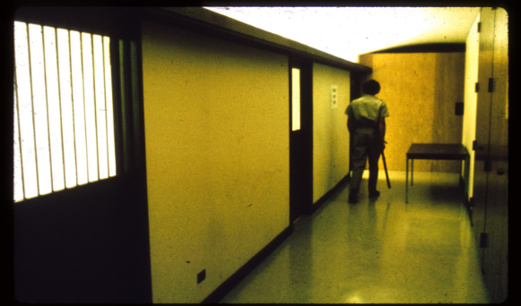

The Stanford Prison experiment took place over 40 years ago on August 15-21st, 1971.
Its original intention was to "Examine the psychological effects of authority and powerlessness in a prison environment."
-Stanford University.
By the end of the experiment there was another conclusion to gather. This conclusion was that evil can be brought out of an otherwise
good person simply from the circumstances of his enviorment, without the individual even realizing they're doing anything wrong.
The Setting
Stanford University is located in Santa Clara, California. The experiment was expected to run for 1-2 weeks
over the summer when school was out. The mock prison the researchers set up was located in the basement of Jordan hall, a
psycology building they had acsess to. The prison would have no windows, clocks, or anything else that you could
identify the outside world with.

The Doctor, and the Incentive
Psychology professor Philip G. Zimbardo, recruited local college students using a local newspaper ad. The ad promised $15
a day in exchange for participating in the two week study. Adjusting for inflation, $15 in 1971 equates to $94.15. Over
the two weeks the experiment was scheduled to run, this equated to over $1300 in todays money. So naturally these broke little college students
chose to participate.
"Over 70 applicants who answered our ad and were given diagnostic interviews,
an extensive battery of psychological tests administered by Craig Haney
and Curt Banks which helped us to eliminate all of those candidates with
any kind of psychological problem, medical disability or history of
crime or drug abuse, until we were left with the final sample of 24
subjects. They were college students from allover the United States
and Canada who happened to be in the Stanford area during the summer
and wanted to earn $15 a day by participating in a psychological study.
On all dimensions that we were able to test or to observe, they reacted
normally."
Dr. Zimbardo, THE STANFORD PRISON EXPERIMENT: A Simulation Study of the Psychology of Imprisonment
conducted August 1971 at Stanford University